總部同仁：新版工作系統說明
新版把各部門常用的功能收進同一個畫面，用分頁同時開好幾個頁面，不用再來回切換。
上線日：另行通知。在那之前舊版照常使用，您可以先看看這份說明。
新版怎麼進去
- 照平常的方式登入，登入後會先看到「工作總覽」。
- 各部門的功能都收在畫面左上角的「選單」，依分類排好，點開選單再點您要的功能。
- 點開的頁面會變成一個分頁，可以同時開好幾頁；想回到哪一頁，點上方的分頁名稱就好。
- 每一頁的右上角都有「回舊版」，需要時可以隨時切回去。
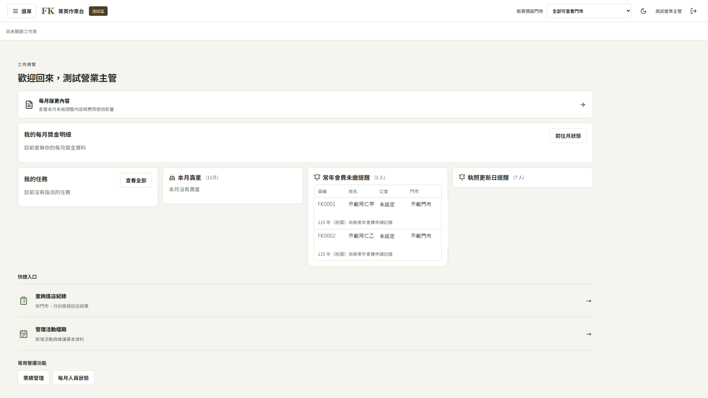
登入後首頁
登入後看到工作總覽，各部門功能都收在左上角「選單」，依分類排列。
跟舊版不同：舊版的功能散在不同頁面，新版統一從左上角「選單」進入。
您最常用的頁面
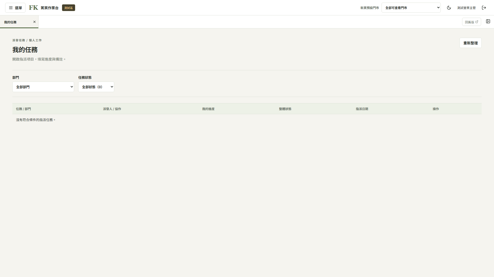
我的任務
在選單的「派發任務」開啟，查看交辦給您的事項。
跟舊版不同：用分頁同時開多頁，右上角有「回舊版」。
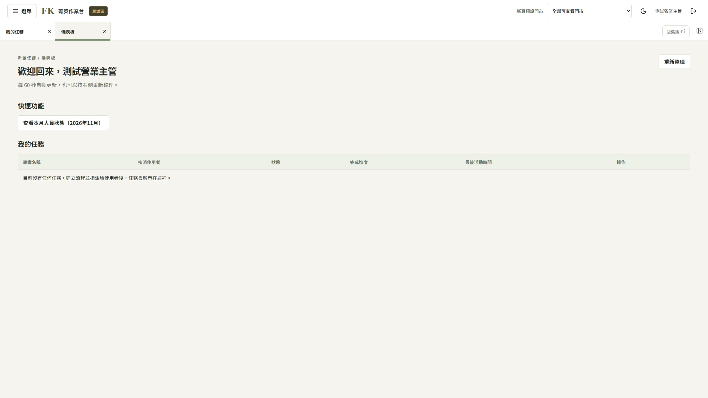
儀表板
放著目前的重點數字，不用重新整理，畫面會自己更新。有快速功能捷徑，可以直接跳到本月人員狀態。
跟舊版不同：每 60 秒自動更新，並新增快速功能捷徑。
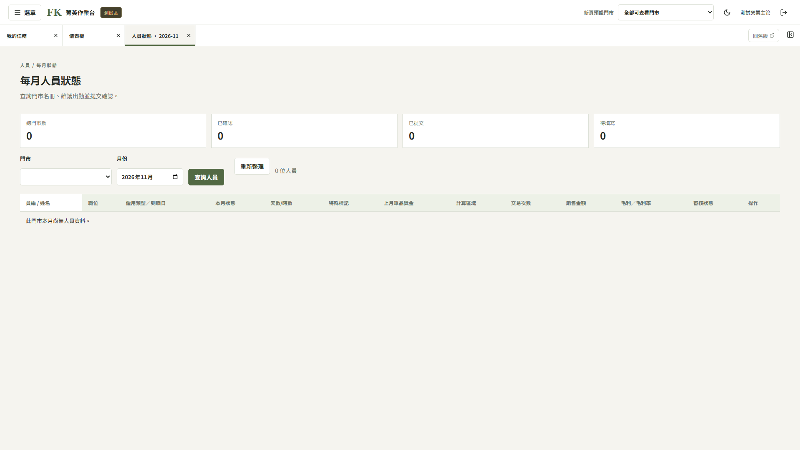
每月人員狀態
查看各門市當月的人員狀況，用頁籤切換不同門市。
跟舊版不同：改成新版分頁，各門市用頁籤切換。截圖用的示範帳號沒有指定門市範圍，所以畫面是空的；您的帳號會依自己的範圍顯示門市。
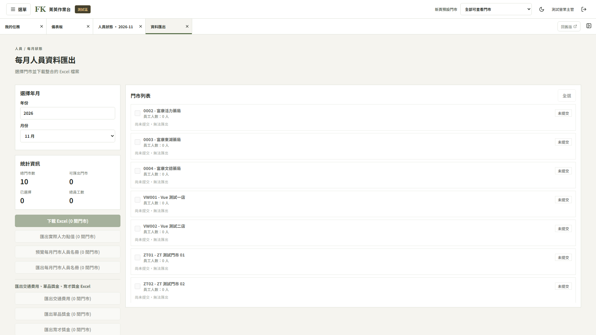
每月人員資料匯出
選好年月與門市後，可以下載整合的 Excel。
跟舊版不同：沒提交的門市會標示「未提交」，而且無法匯出；下載檔名裡的日期改成橫線寫法。
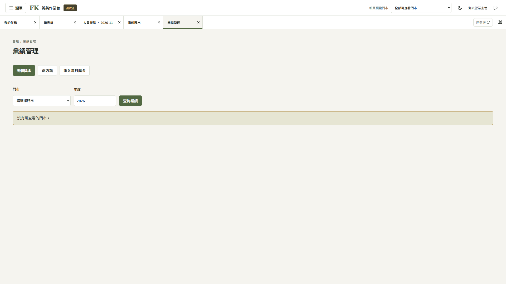
業績管理
團體獎金、處方箋、匯入每月獎金三個功能，用上方的按鈕切換。
跟舊版不同：三個功能合併在同一頁。截圖用的示範帳號沒有可查看的門市，所以只顯示提示。
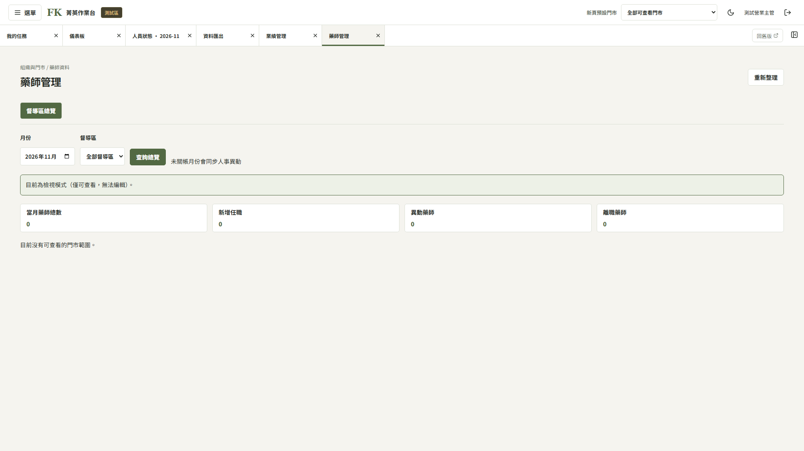
藥師管理
管理藥師資料，並可看到各督導區的整體狀況。
跟舊版不同：改成新版頁面，新增「督導區總覽」；如果您只有檢視權限，畫面會明確標示「目前為檢視模式」。
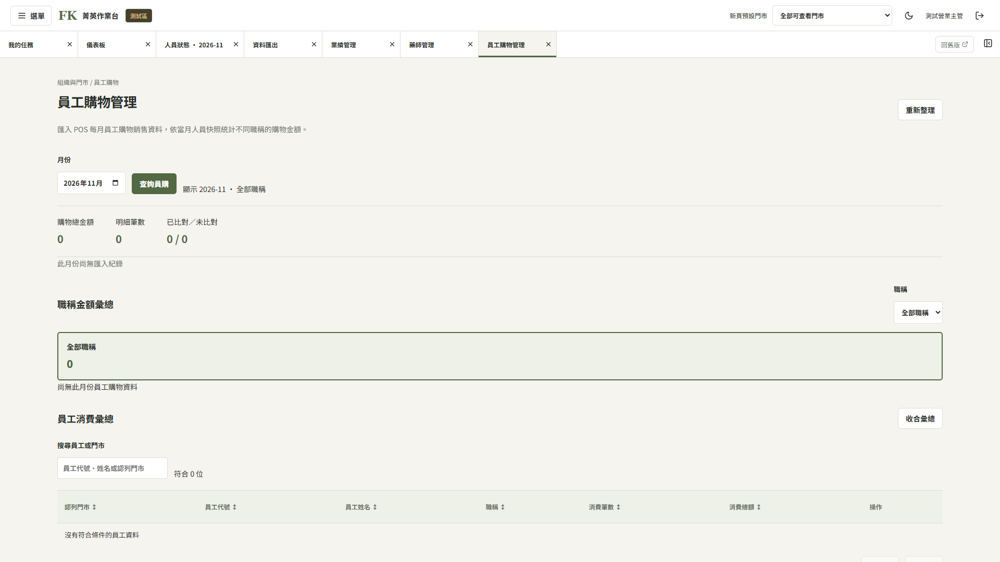
員工購物管理
匯入每月的員工購物資料後，系統會依當月人員的職稱統計金額。
跟舊版不同：在新版分頁內開啟，不用另外跳到別的頁面。
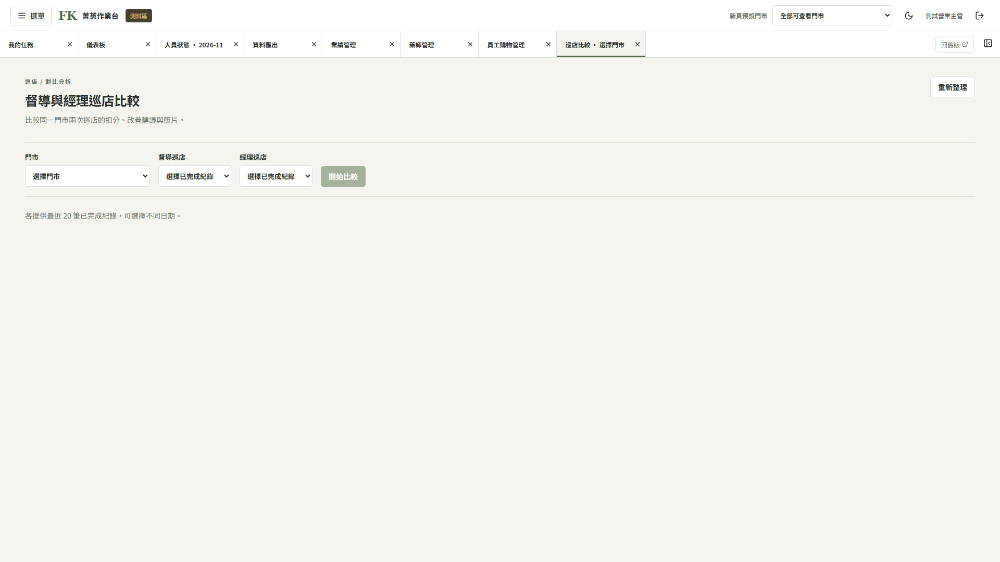
巡店比較
放在選單的「督導巡店」底下。先選門市，再各選一筆督導巡店與經理巡店的紀錄，就能比較扣分與照片。
跟舊版不同：位置固定在「督導巡店」選單底下，在新版分頁內開啟。
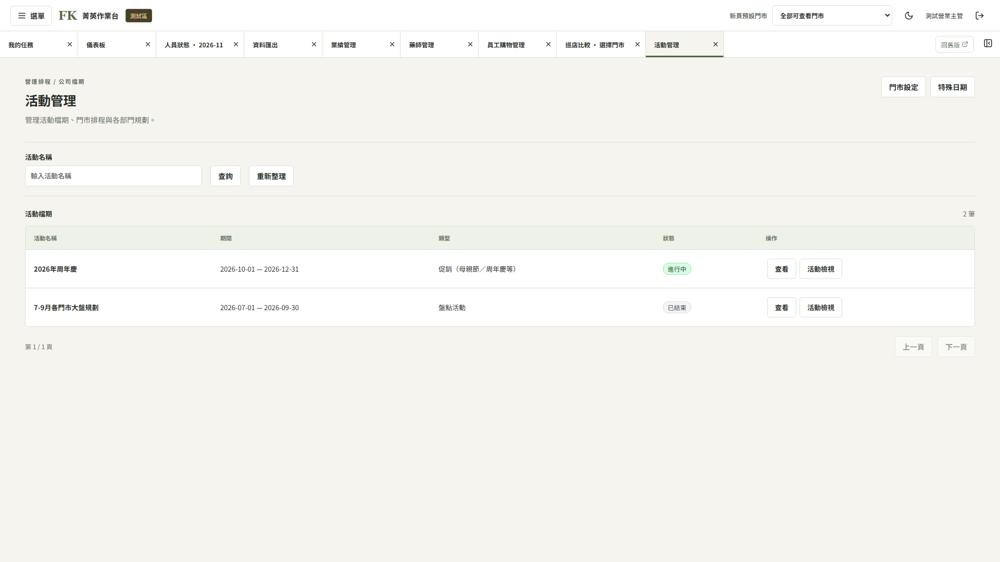
活動管理
放在選單的「組織與門市」，可以管理活動與排程。
跟舊版不同：改在新版分頁內管理，不用離開目前的工作畫面。
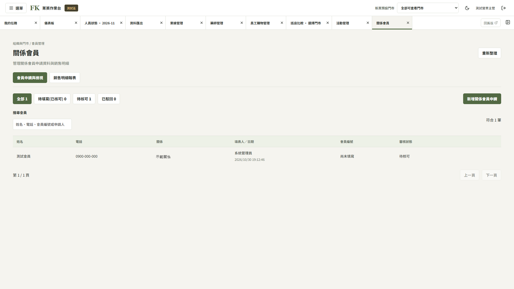
關係會員
可以搜尋會員，名單每頁顯示 50 筆，用分頁翻閱。（截圖上的姓名電話是測試資料。）
跟舊版不同：多了搜尋與分頁；姓名與電話改回兩個欄位；重複匯入同一份銷售明細會自動略過，並多一欄「匯入來源／時間」。
遇到問題怎麼辦
未存的內容不會不見。按右上角「回舊版」，舊版會另開一個新分頁，原本的畫面還在，您填到一半的內容不會消失。
- 想用舊版：點右上角「回舊版」連結，會另開舊版頁面。
- 看到「此頁已由系統管理員暫時切回舊版」的通知：代表這一頁暫時改用舊版，請點通知裡的連結，照舊版操作即可。
- 還是不行：請聯絡總部系統管理員。
常見問題
新版什麼時候開始用？
上線日另行通知。公布之前舊版照常使用。
舊版還能用嗎？
可以。每一頁右上角都有「回舊版」，隨時能切回去。
切回舊版，我填到一半的內容會不見嗎？
不會。舊版會另開一個分頁，原本的新版畫面還保留著，未存的內容都在。
我的每月人員狀態畫面是空的，是壞了嗎？
可能是您的帳號還沒有指定可查看的門市。請聯絡總部系統管理員確認範圍。
找不到某個功能在哪裡？
點左上角「選單」，功能依分類排列，例如「派發任務」「督導巡店」「組織與門市」。選單只會顯示您的職務能用的功能，同事看到的項目可能和您不同。仍找不到請聯絡總部系統管理員。